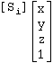
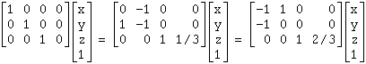

|
Basic Maths for Protein Crystallographers |
| Symmetry operators |
Since crystals are repeating lattices with straight edges, the only symmetry elements
compatible with crystallinity are:
| |
rotation axis perpendicular to a crystal plane |
| 2fold |
|
| 3fold |
|
| 4fold |
|
| 5fold |
× |
| 6fold |
|
|
| screw axis |
with translation steps |
|
1/2 |
|
1/3 or 2/3 |
|
1/4, 2/4, or 3/4 |
| × |
× |
|
1/6,2/6,3/6,4/6,or 5/6 |
|
Symmetry-equivalent atoms are tabulated in the International Tables like this:
(x,y,z), (-y, x-y, z+1/3), (y-x, -x, z+2/3) (this is for spacegroup P31).
But it is useful to think of symmetry operators as 3x4 or 4x4 matrices and generate symmetry related
atoms thus. Then the symmetry-related coordinates in P31 are
,
i.e.
.
If the [Si] is augmented to [S'i], a 4x4 matrix, by the addition of a fourth row,
[0 0 0 1], the augmented symmetry operators make a closed group, i.e.
for some i,j and k:
[S'i][S'j]=[S'k]and
[S'i]-1=[S'k].